At PurrPets, we’ve reached the summit of our 51-breed journey! These final five breeds represent some of the most popular, hardy, and affectionate cats in history.
| Breed Name | Visual Example | The "Breed Secret" |
|---|---|---|
| American Shorthair | 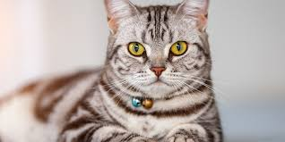 |
Descended from cats that protected food on the Mayflower! |
| Exotic Shorthair | 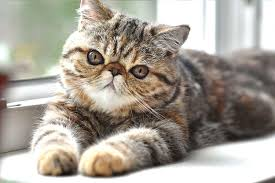 |
All the looks of a Persian, but with a "wash-and-wear" short coat. |
| Burmese | 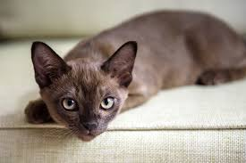 |
Incredibly heavy for their size; often called "bricks wrapped in silk." |
| Bombay | 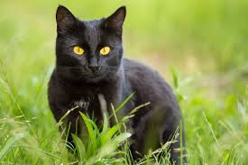 |
A "Velcro cat" that looks like a panther with copper-penny eyes. |
| Siberian | 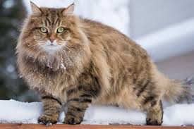 |
National cat of Russia; their fur is triple-layered for snow! |
| Devon Rex | 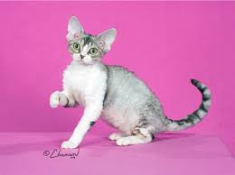 |
Huge ears and wavy fur; often called the "Poodle of Cats." |
| Balinese | 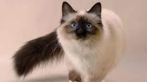 |
A long-haired Siamese; graceful, vocal, and very chatty. |
| Oriental Shorthair | 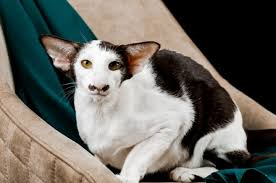 |
Sleek, angular faces with over 300 possible color combos! |
| American Bobtail | 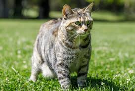 |
Known for their short, stubby "bobbed" tail and wild look. |
| American Curl | 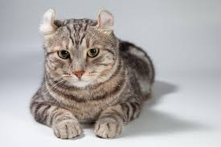 |
Their ears literally curl backward toward the center of the skull! |
| Chartreux | 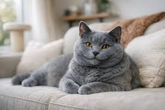 |
The "Smiling Cat" of France; silent but very loyal. |
| American Wirehair | 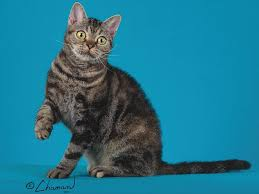 |
A rare mutation where the fur is springy, dense, and "crimped." |
| Manx | 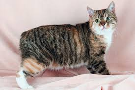 |
Famous for having no tail at all; they hop almost like rabbits! |
| Turkish Angora | 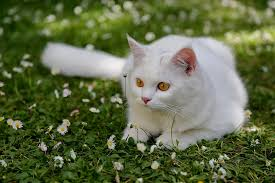 |
Fine, shimmering silk that rarely mats. Very elegant! |
| Cornish Rex | 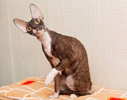 |
Tight, curly waves that feel like crushed velvet to the touch. |
| British Longhair | 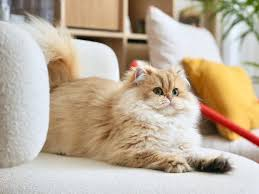 |
A massive, plush "mane" that makes them look like tiny lions. |
| Colorpoint Shorthair | 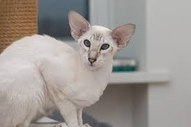 |
Sleek and athletic with vibrant "points" of color. |
| Javanese | 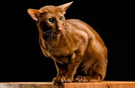 |
Long, slender, and very vocal. They love to "talk" to their owners. |
Your PurrPets encyclopedia is now fully stocked. Whether you want a cat that hunts mice like the **American Shorthair** or one that thrives in the cold like the **Siberian**, you have the knowledge to choose.
The Siberian is a massive, powerful cat that takes up to five years to reach full size. Despite their wild look and heavy coat, they are famous for being "hypoallergenic"—many people with cat allergies find they don't react to Siberians because they produce less of the Fel d 1 protein!